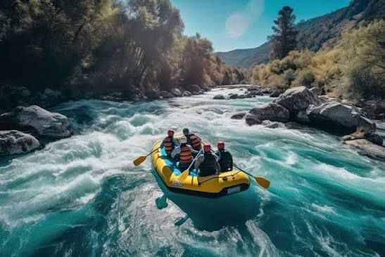
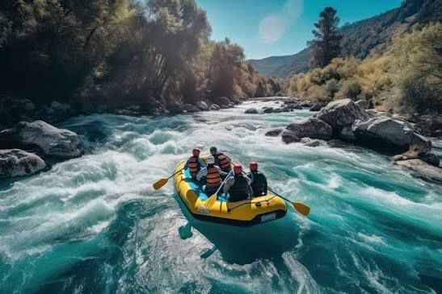

Here at White Water Rafting, our whitewater rafting trips are designed to provide thrill-seekers with an unforgettable experience on the water. Our expert guides ensure safety while you navigate through stunning landscapes and challenging rapids. Oars Up!